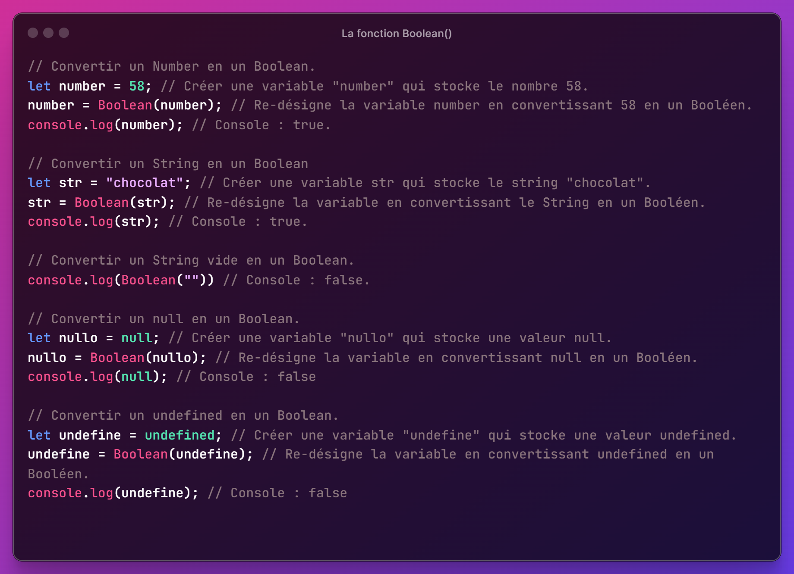

Les Conversions de Types
En JavaScript, il existe trois fonctions pour convertir un type en un autre :
- Number() : Convertit une valeur en un nombre.
- String() : Convertit une valeur en une chaîne de caractères (string).
- Boolean() : Convertit une valeur en un booléen (true ou false).
La fonction Number()
La fonction Number() est utilisée pour convertir une valeur en un nombre en JavaScript. Elle peut convertir des chaînes de caractères contenant des chiffres en nombres, ainsi que d'autres types de valeurs en leur représentation numérique.
La fonction String()
La fonction String() est utilisée pour convertir une valeur en une chaine de caractères en Javascript. Elle peut convertir des chaînes de caractères contenant des chiffres en nombres, ainsi que d'autres types de valeurs en leur représentation numérique.
Elle va convertir tout ce qui est possible en texte, on utilise ceci pour la concaténation par exemple.
La fonction Boolean()
La fonction Boolean() est utilisée pour convertir une valeur en un type booléen (true ou false) en JavaScript.
Elle est principalement utilisée pour évaluer la vérité ou la fausseté d'une valeur ou d'une expression dans le contexte de la logique conditionnelle.
